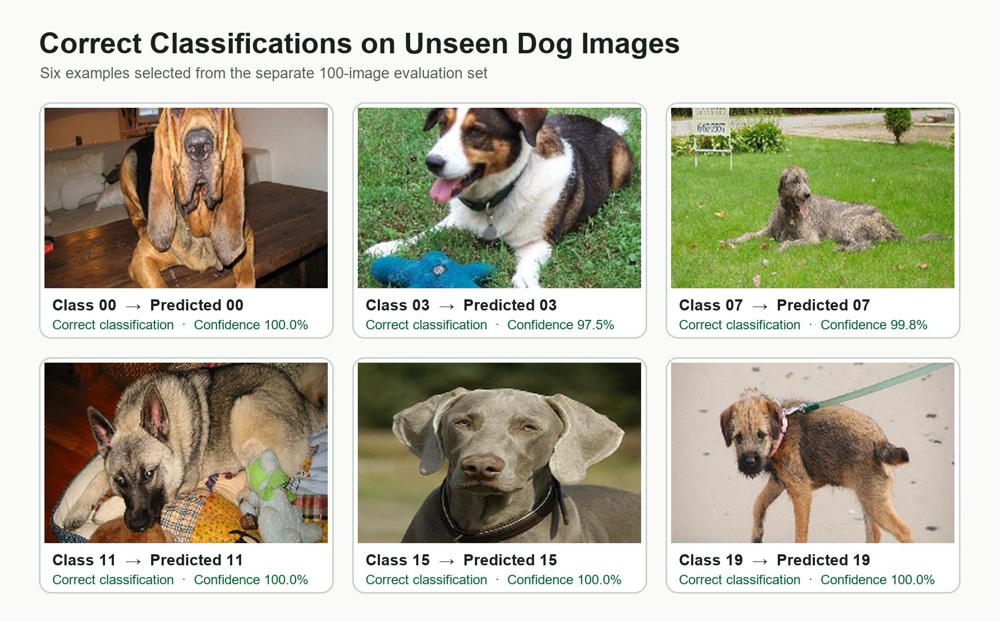

ECE 527 · Learning From Data
Transfer Learning for 20-Class Dog Image Classification
This project investigates whether a pretrained visual model can be adapted to distinguish 20 dog-image classes when only a modest labeled dataset is available.
Problem
Reliable Classification from Limited Training Data
The task is to map a 224 × 224 RGB dog image to one of 20 classes. Training a CNN from scratch on 3,132 images generalized poorly, so the central problem is how to reuse learned visual features while adapting the model to this smaller dataset.
- Input
- 3,132 labeled RGB images across 20 dog classes.
- Objective
- Predict the correct class for dog images not used during training.
- Challenge
- Learn discriminative features without overfitting a relatively small image dataset.
CNN Design
MobileNetV2 Transfer-Learning Backbone
The model starts from ImageNet-pretrained MobileNetV2 features, fine-tunes the final 10 backbone layers, and adds a compact convolutional head for the 20-class task.
- Backbone
- MobileNetV2 without its original classifier; earlier layers are frozen and the final 10 are fine-tuned.
- Classifier head
- Conv2D(256) → MaxPool → Conv2D(128) → MaxPool → global average pooling.
- Output
- Dense(128) → Dropout(0.5) → Dense(20) with softmax probabilities.

Results
Evaluation on Held-Out and Unseen Images
Transfer learning produced stable validation performance and generalized to the separate course evaluation set. The confusion matrix summarizes which of the 20 classes remain difficult to distinguish.
Held-out accuracy
84.21% on the 20% development split.
Separate evaluation
92.00% on 100 unseen dog images.
Final training accuracy
85.07% after 15 epochs.
